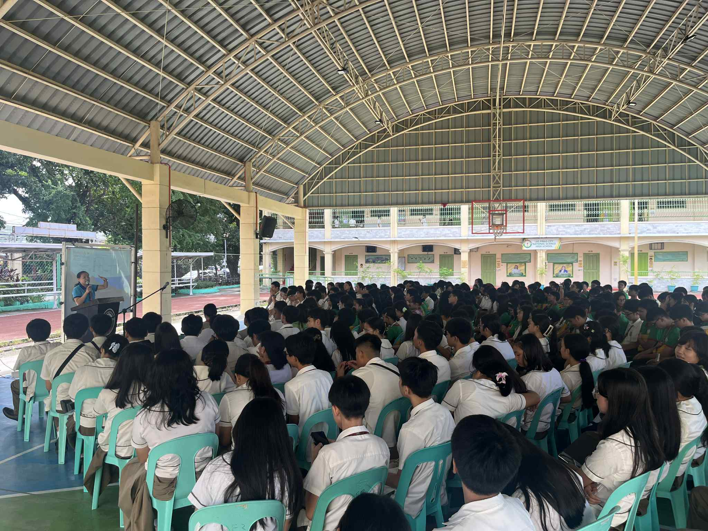
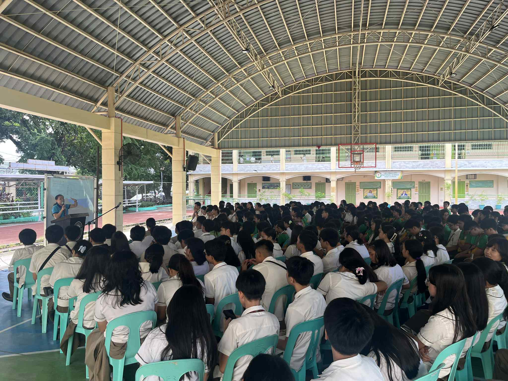

Welcome!
Step into the world of Morynel Joy O. Pacot — where stories unfold. Xoxo
Name: Morynel Joy O. Pacot
Age: 14 years old
Birthday: December 16, 2010
I'm a person who can be both outgoing and shy depending on the situation. I enjoy being around people and making new friends, but I also appreciate quiet moments to reflect on my thoughts. My dream is to become either a psychologist or an IT specialist someday. I've always wanted to understand people's emotions better, and my kuya has inspired me to explore the world of technology since I was little.
üîç Discover More
My pics and more about me (scroll right to left)
I'm a Christian, though I admit that I'm still learning how to strengthen my faith and deepen my relationship with God. It's something I remind myself to work on every day.
Back then, I loved reading books and getting lost in stories. Nowadays, I'm still figuring out what hobbies truly make me happy, but I enjoy watching TikTok and cooking whenever I feel like it. Even if I'm still in the process of discovering myself, I know that I'm growing—slowly but surely—into the person I'm meant to be.
My Inner Circle
Songs:
• Love is by The Ridleys
• Campfire, To You, and Kidult by Seventeen
• Bawat daan by Ebe Dancel
My friends have always felt like an extension of my family. Our group, the Skinnies — Martin, Dash, Maeur, Rolly, Jayzel, me (Joy), Yeuffa, Laurenz, Mark, Nicole, Chloe, and Ayeka — started back in seventh grade. Even though we eventually got separated into different sections and schools, our bond never really changed. Every time we reunite, it still feels like the same old us — full of laughter, inside jokes, and a sense of belonging that's hard to put into words.
Among everyone, I've always been closest to Ayeka and Yeuffa. With Ayeka, I can be my most vulnerable self. She listens without judgment, and no matter how small my problems are, she always makes me feel heard. Yeuffa, on the other hand, brings so much energy and honesty into my life. She's straightforward, funny, and real — the kind of friend who makes even the worst days bearable.
Aya has been my best friend since before I could even spell "best friend." We've known each other since we were younger than five, and she's seen every part of who I am — the loud, the quiet, the broken, and the healed. Nathalie, my friend since sixth grade, might have come into my life a bit later, but she's one of the most genuine people I know. She has this calm presence that makes me feel safe, like I can tell her anything.
No matter how much life changes or where we all end up, I know our friendship will always stay the same. The Skinnies — and the friends who've stayed with me through every chapter — will always feel like home.

Behind every great girl is an even greater family.
One thing I'm really proud of about my family is how we show love in quiet, unspoken ways. My dad isn't the affectionate type — call him nonchalant, if you want. I've never been good at reading his emotions, even when I was little. But behind his calm and serious face is a kind of love that doesn't need words. He's the kind of dad who secretly slips money into my bag even when Mom tells him not to. He'll pick me up whenever he can, just to save me the trouble — or as he always says, "Mas mabuti nang ako na ang magsundo kaysa naman na mag-isa kang umuwi."
My mom shows her love in a similar way. She's the person I run to when everything feels heavy. I can tell her almost anything because she always tries to understand and support whatever makes me happy. Her quiet presence is my comfort.
And then there's my sister — my best friend since I was two. I may not be the perfect older sister who knows exactly what to teach her, but I'm grateful for her every day. She understands me in ways no one else can. With her, I can always be myself, knowing I'll never be judged.
üíª ICT
A series of tech-savvy adventures where secrets of code are revealed...
Output:
Description: This lesson introduced CSS or Cascading Style Sheets and explained how it works with HTML to design webpages. It also discussed the three layers of a webpage: content, presentation, and behavior.
What I learned: I learned that CSS is used to control the look and layout of a webpage while HTML provides the structure. I understood how CSS makes webpages more attractive, consistent, and easier to maintain. I also learned about the benefits of CSS such as saving time, improving design, and making websites load faster.
Output:
Description: This lesson was all about how CSS helps control the design and layout of a webpage. It showed how style sheets make websites more organized and visually appealing by separating content from style.
What I learned: I learned the three kinds of CSS—external, embedded, and inline—and how each one is used to style HTML elements. I also understood how CSS uses selectors, properties, and values to change the appearance of text, colors, and layouts.
Output:
Output:
Output:
Output:
üéâ Mission 2: Events
Featured Appearances: Buwan ng Wika, Intrams, Science Fair, AP, Teacher's Day, Cluster Meet
üîì View Event Details
The Scene: Buwan ng Wika
üì∏ Photos & videos by: Ang Paham
üí≠ Reflection:
• What was the most important moment?
The most important moment was realizing how our Filipino language connects us all as students. Whether through cultural performances, traditional games, or simply speaking in our native tongue, I felt a deep sense of pride in our heritage.
• How do you apply this knowledge?
I now make a conscious effort to use Filipino more in daily conversations and appreciate the beauty of our language. I also try to learn more about different Filipino dialects and regional expressions to better understand our diverse culture.
• Did you participate?
Yes! I participated by wearing traditional Filipino clothing (barong at saya). It was a beautiful experience to dress in our cultural attire and celebrate our heritage alongside my classmates. I also supported my friends who performed and competed.
• How would you teach others?
I would encourage them to actively participate in cultural celebrations, even in simple ways like wearing traditional clothing. Every act of celebrating our culture - big or small - helps keep our Filipino identity alive and strong.
• Why is this important to remember?
Buwan ng Wika reminds us that our language and culture are treasures worth preserving. Wearing barong at saya wasn't just about looking nice - it was a statement of pride in who we are as Filipinos and a commitment to honoring our roots.
üîì View Event Details

üì∏ Photos & videos by: Jayzel Zyrine Macawili,LPress, Jade Imperial
ü§î Reflection:
• Most important thing I learned?
I learned that you don't have to be an athlete to be part of the team. Support, encouragement, and school spirit are just as valuable as competing. Being there for my friends showed me the true meaning of camaraderie and unity.
I can apply this by being a supportive friend in all aspects of life - not just in sports. Whether in academics, personal struggles, or achievements, showing up and cheering for others creates stronger bonds and builds a positive community.
• Did I participate? How?
I participated by actively supporting and cheering for my friends and classmates who competed. I was present during events, showed school spirit, and celebrated our section's efforts whether we won or lost.
• How would I explain this?
I would explain that intramurals isn't just about winning medals - it's about teamwork, trying your best, and building friendships. Everyone has a role, whether competing or cheering, and both are equally important for creating memorable experiences.
• Why is this event important?
Intramurals is important because it promotes physical health, teamwork, and school unity. It gives students a break from academic pressure and allows different talents to shine. The event teaches life skills like sportsmanship, resilience, and the value of healthy competition that we'll carry beyond school.
üîì View Event Details

üì∏ Photos & videos by: LPress, Ang Paham
ü§î Reflection:
• Most important thing I learned?
I learned that science is everywhere - not just in laboratories or textbooks. Seeing my friends' projects and experiments showed me how scientific thinking helps us solve real-world problems and understand the world around us better.
• How can I apply what I learned in real-life situations?
I can apply scientific thinking by being more observant and questioning. When faced with problems, I can use the scientific method - observe, hypothesize, test, and conclude. This logical approach works for academic challenges and everyday decision-making.
• Did I participate? How?
Yes! I actively participated in a research colloquium where we presented our study on using biodiesel (cocomethyl) as an alternative fuel to reduce carbon emissions. Presenting our findings and answering questions from judges and audiences was both challenging and rewarding.
• If I were to teach this topic/subject to a classmate, how would I explain it?
I would explain that science research isn't just about memorizing facts - it's about finding solutions to real problems. Using our biodiesel research as an example, I'd show how scientific method helps us test alternatives that can help save our environment from pollution and climate change.
• Why is this event important?
Science Month is important because it showcases how science can solve real-world problems like climate change and pollution. Events like research colloquiums allow students to develop critical thinking, presentation skills, and environmental awareness. It inspires us to use science for innovation and to create a more sustainable future for our planet.
üîì View Event Details
 

üì∏ Photos & videos by: AP Club, Ang Paham
ü§î Reflection:
• Most important thing I learned?
I learned how economics and history are deeply connected to our daily lives. Understanding concepts like demand, supply, and elasticity, along with our historical background, helps me make sense of current events and societal issues.
• How can I apply what I learned in real-life situations?
I can apply this by being a more informed consumer and citizen. Understanding economic principles helps me make smarter decisions about spending and saving. Knowledge of history helps me understand current political and social issues and participate in discussions meaningfully.
• Did I participate? How?
I participated through drawing an editorial cartoon, attending seminars, and taking the quiz bee in class. While I didn't join competitions, I actively learned the material and tried to understand how these subjects relate to real life.
• If I were to teach this topic/subject to a classmate, how would I explain it?
I would use everyday examples - like why jeepney fares increase, how sari-sari stores operate, or how EDSA Revolution changed our government. Making it relatable and showing how history and economics affect their daily lives makes learning more interesting and meaningful.
• Why is this event important?
Araling Panlipunan month is crucial because these subjects teach us to be responsible citizens. Economics helps us understand how society functions financially, while history prevents us from repeating past mistakes. Together, they equip us with knowledge to make informed decisions for our country's future.
üîì View Event Details
üì∏ Photos & videos by: Zedrick Bumanglag, Arkin Nava, Chaello Abellon
ü§î Reflection:
• Most important thing I learned?
I learned the importance of gratitude and recognition. Seeing how happy our teachers were with simple gestures like flowers reminded me that appreciation doesn't need to be grand - sincerity matters most.
• How can I apply what I learned in real-life situations?
I can apply this by regularly showing appreciation to people who help me - not just teachers, but parents, friends, and anyone who makes a difference in my life. Small acts of kindness and gratitude strengthen relationships and create a positive environment.
• Did I participate? How?
Yes because as an officer, I actively participated by helping prepare and arrange flowers for our teachers. Being part of the organizing team and seeing their genuine appreciation made the experience meaningful and fulfilling.
• If I were to teach this topic/subject to a classmate, how would I explain it?
I would explain that Teachers' Day isn't just a formality - it's about recognizing the people who shape our future. Teachers sacrifice time and energy for us, and showing appreciation strengthens the student-teacher relationship, making learning more enjoyable for everyone.
• Why is this event important?
Teachers' Day is important because teachers deserve recognition for their dedication and hard work. This event reminds us to value education and the people who provide it. It also strengthens the school community by fostering mutual respect between students and teachers, creating a better learning environment.
üîì View Event Details

ü§î Reflection:
• Most important thing I learned?
I learned the power of support and school pride. Watching my friends compete and representing our school taught me that being part of a community means showing up for each other, celebrating successes, and providing encouragement through challenges.
• How can I apply what I learned in real-life situations?
I can apply this by being present and supportive in all situations - whether friends are competing, presenting, or facing difficulties. Being a reliable support system builds trust and strengthens friendships beyond just school events.
• Did I participate? How?
I participated by supporting and cheering for my friends who competed in various contests. Being there to encourage them, celebrate their efforts, and show school spirit was my way of actively contributing to our school's representation.
• If I were to teach this topic/subject to a classmate, how would I explain it?
I would explain that cluster meet is about representing your school with pride and learning from others. It's not just about winning - it's about gaining experience, meeting talented students from other schools, and growing through healthy competition and support.
• Why is this event important?
Cluster Meet is important because it challenges students to excel beyond their comfort zones and represent their school at a higher level. It promotes healthy competition, exposes students to different schools' strengths, and builds character through both victory and defeat. The event fosters school pride and unity.
üìö Economics Adventure
A journey through the secrets of economics. Two visual lessons per topic.
üìò Kahulugan: Ang demand ay tumutukoy sa dami ng produkto o serbisyo na gusto at kayang bilhin ng mamimili sa isang takdang presyo at panahon.
Batas ng Demand: Ceteris paribus Kapag tumataas ang presyo, bumababa ang demand; kapag bumababa ang presyo, tumataas ang demand — ito ay may inversong ugnayan sa pagitan ng presyo at dami ng demand.
Mga Salik na Nakaaapekto sa Demand:
Kita ng Mamimili — kapag tumaas ang kita, tumataas din ang demand.
Panlasa at Kagustuhan — mas gusto ng mamimili, mas mataas ang demand.
Presyo ng Kaugnay na Produkto — maaaring kapalit (substitute) o kasabay (complement).
Dami ng Mamimili — mas maraming mamimili, mas mataas ang kabuuang demand.
Halimbawa: Inaasahan sa Hinaharap — kung inaasahan ang pagtaas ng presyo, bibilhin agad ngayon.
üìò Kahulugan: Ang supply ay dami ng produkto o serbisyo na handa at kayang ipagbili ng mga prodyuser sa takdang presyo at panahon.
Batas ng Supply: Ceteris paribus Kapag tumataas ang presyo, tumataas ang supply; kapag bumababa ang presyo, bumababa ang supply — may direktang ugnayan sa pagitan ng presyo at dami ng supply.
Mga Salik na Nakaaapekto sa Supply:
Teknolohiya — mas modernong teknolohiya, mas mabilis ang produksyon.
Presyo ng Input — kung tumaas ang presyo ng materyales, bababa ang supply.
Bilang ng Prodyuser — mas maraming gumagawa, mas mataas ang kabuuang supply.
Inaasahan sa Presyo — kung inaasahan ang pagbaba ng presyo, babawasan muna ang supply.
Kalikasan at Panahon — bagyo, tagtuyot, at iba pa ay maaaring magpababa ng supply.
Halimbawa: Kapag tumaas ang presyo ng mangga, mas maraming magsasaka ang magbebenta nito.
üìò Kahulugan: Ang price elasticity ay sumusukat kung gaano kalaki ang pagtugon ng demand o supply sa pagbabago ng presyo.
Mga Uri ng Elastisidad:
Elastic Demand — malaking pagbabago sa dami kahit maliit na pagbabago sa presyo (hal. luxury goods).
Inelastic Demand — maliit na pagbabago sa dami kahit malaki ang pagbabago sa presyo (hal. bigas, gamot).
Unitary Elastic — parehong porsyento ng pagbabago sa presyo at demand.
Halimbawa: Kapag tumaas ng 10% ang presyo ng softdrinks at bumaba ang demand ng 30%, ito ay elastic.
üìò Kahulugan: Ang market equilibrium ay kalagayan kung saan nagtatagpo ang demand at supply ‚Äî dito walang labis (surplus) o kulang (shortage).
Mga Sangkap:
Equilibrium Price (Presyo ng Kabalansahan): Presyong nagpapantay sa demand at supply.
Equilibrium Quantity: Dami ng produkto na ibinenta sa equilibrium price.
Halimbawa: Kung ang presyo ng itlog ay ₱7 bawat piraso at parehong 1,000 piraso ang gusto ng mamimili at ibinebenta ng prodyuser, ito ang equilibrium point.
Di Kabalanseng Kalagayan:
Surplus: mas marami ang supply kaysa demand → pagbaba ng presyo.
Shortage: mas marami ang demand kaysa supply → pagtaas ng presyo.

üìò Kahulugan:
Ang market structure ay tumutukoy sa uri ng kompetisyon sa pagitan ng mga prodyuser sa merkado.
1. Ganap na Kompetisyon
- Maraming nagbebenta at bumibili.
- Pare-pareho ang produkto.
- Walang kontrol sa presyo.
- Halimbawa: palengke, gulayan.
2. Monopolyo
- Isang kompanya lang ang nagbebenta.
- Walang katunggali kaya kontrolado ang presyo.
- Halimbawa: Meralco (kuryente).
3. Monopolistikong Kompetisyon
- Maraming nagbebenta pero may kaunting pagkakaiba sa produkto.
- Gumagamit ng brand name o advertisement.
- Halimbawa:sabon, toothpaste, gatas.
4. Oligopolyo
- Kaunting kompanya ang nagkokontrol ng presyo.
- Kadalasang nagkakasundo sa presyo o promosyon.
- Halimbawa: telco companies, oil firms.
üíê Layunin:
- Panatilihin ang patas na kompetisyon
- Protektahan ang mamimili at prodyuser
- Kontrolin ang presyo at iwasan ang pang-aabuso
üè∑Ô∏è 1. Price Act (RA 7581, binago ng RA 10623)
- Pinoprotektahan ang mamimili laban sa sobrang taas ng presyo sa panahon ng krisis
- Pinapayagan ang pamahalaan na magtakda ng price ceiling
- Laban sa hoarding, profiteering, at cartel
üõçÔ∏è 2. Consumer Act (RA 7394)
- Pinangangalagaan ang karapatan ng mamimili sa kaligtasan, impormasyon, pagpili, at pagreklamo
- Ipinapatupad ng DTI, DOH, at DA
üìâ 3. Price Ceiling
- Pinakamataas na presyo na puwedeng ipataw ng nagtitinda
- Tulong sa mga mamimili para makabili ng abot-kayang produkto
- Halimbawa: pagtatakda ng presyo sa bigas
üìà 4. Price Floor
- Pinakamababang presyo na itinatalaga ng pamahalaan
- Proteksyon sa mga prodyuser at manggagawa
- Halimbawa: minimum wage
- üå∑ Tinitiyak ng pamahalaan na may patas na presyo at protektado ang mamimili at prodyuser laban sa pananamantala.